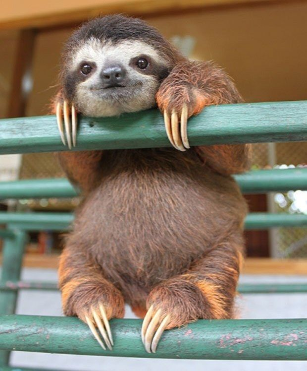

| Picture | Description |
|---|---|
|
This was the first sloth to travel into space. He made one giant, slow step for all sloth kind. |
|  | Just a cute sloth who's belly looks somewhat like a coconut. How can you not like that face? |
| Flash was the first sloth to land an acting role in a feature film. He made great strides for all sloths in the acting industry. |